Drafted And Slum
1996-97.In the 1996-97 ‘NBA’ season, Bryant played well and created a record by becoming the youngest player ever to play in an ‘NBA’ game.
In the ‘All-Star weekend,’ held in February 1997, he won the ‘Slam Dunk Contest’ and registered his name as the youngest player to win this championship.
With the 13th pick in the 1996 NBA Draft, the Charlotte Hornets selected Kobe Bryant, the teenage phenom from Lower Merion High School in Philadelphia.
He’d earned four state championships in four years, but his stint with the Hornets wouldn’t last nearly as long. They traded him to the Los Angeles Lakers for Vlade Divac.
At age 17, Bryant was still considered a minor. His parents had to cosign his three-year, $3.5 million rookie contract.As a rookie in 1996–97, Bryant mostly came off the bench behind guards Eddie Jones and Nick Van Exel.
At the time, he was the second-youngest player ever to play in an NBA game (18 years, 72 days) and also became the youngest NBA starter (18 years, 158 days).
Bryant was 18 by the time All-Star Weekend rolled around. He didn’t make the team, but he did participate in the Rookie Challenge, and he won the Slam Dunk Contest.
Bryant barely made it out of the contest’s opening round. He only scored a 37, slightly higher than Ray Allen’s 35. But he clinched the title in the second round with a near-perfect score.
Bryant had 49. Chris Carr had 45. Michael Finley managed 33.
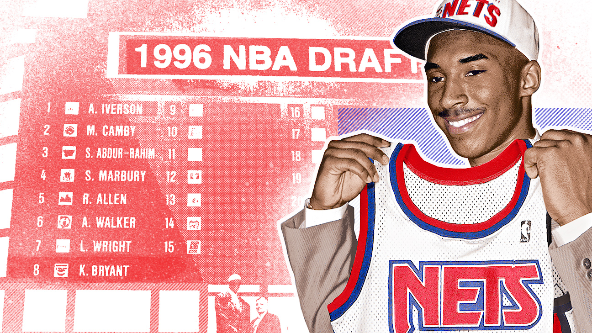
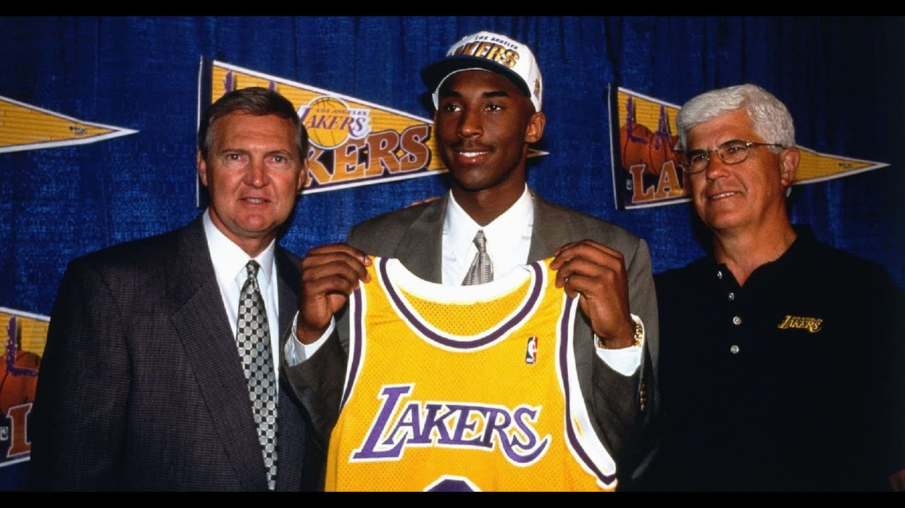
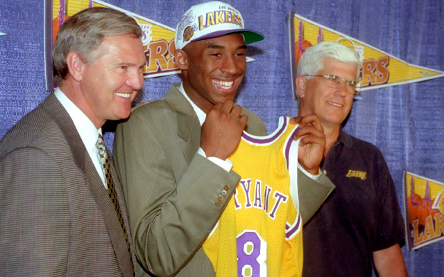
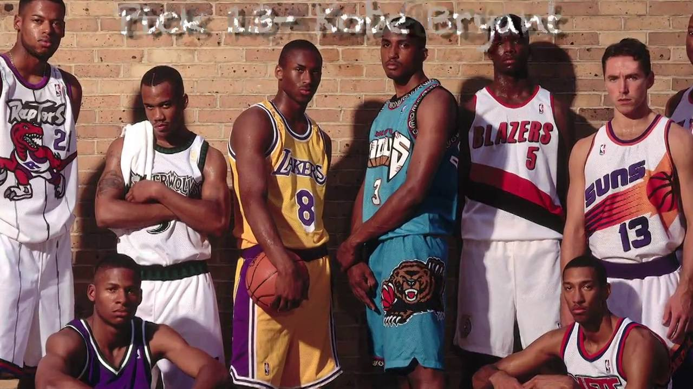
1999-2002.Three-peat (1999–2002) Bryant’s fortunes would improve when Phil Jackson took over as mentor of the Lakers in 1999.
Following quite a while of consistent improvement, Bryant got one of the chief shooting monitors in the association, acquiring appearances in the alliance’s All-NBA, All-Star, and All-Defensive groups.
The Lakers had been a playoff team with Bryant and Shaquille O’Neal, but they hadn’t quite reached championship form.
The furthest they’d made it was to the conference finals.
That all changed when Phil Jackson arrived. Jackson had already won six league titles with the Chicago Bulls. He’d twice won three in a row. Bryant and Shaq helped him accomplish it a third time.
The Lakers knocked off the Indiana Pacers in 2000, Philadelphia 76ers in 2001 and the New Jersey Nets in 2002 for the NBA crown. To this day, this was the last time a team won three straight titles.
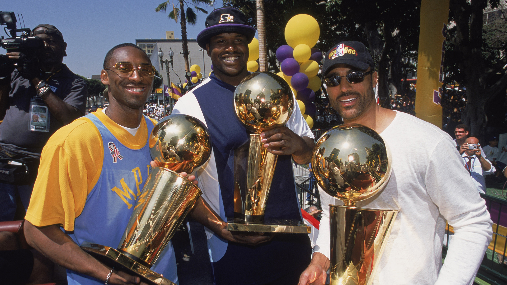
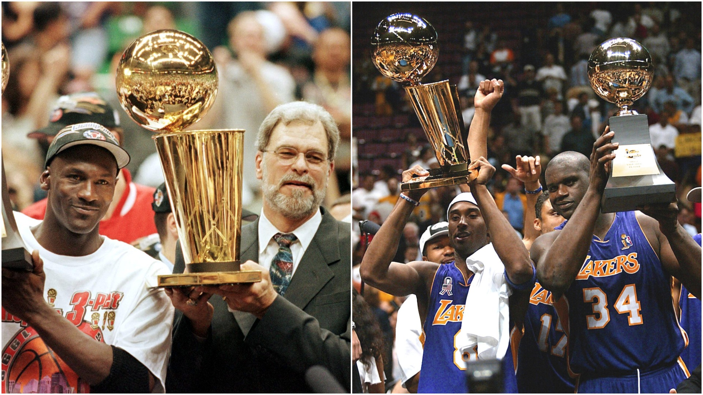
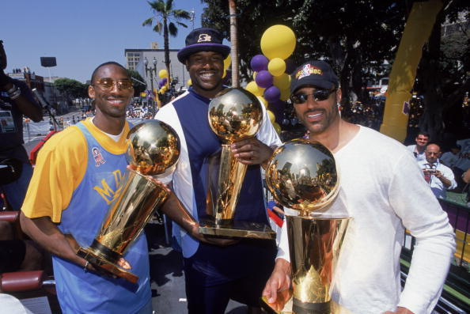
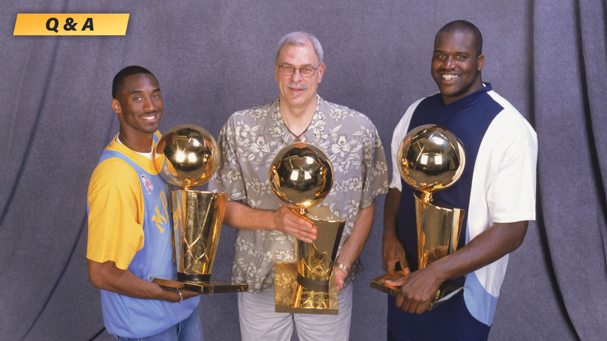
2004-2005.He led the NBA in scoring during the 2005–06 and 2006–07 seasons.
In 2006, Bryant scored a career-high 81 points against the Toronto Raptors,
the second-highest number of points scored in a game in NBA history. Behind only Wilt Chamberlain's 100 point performance, and highest output for a guard.
Bryant and O’Neal had butted heads since they first teamed up in 1996.
Shaq took issue with the style of basketball Bryant played, labeling him “selfish” and a “show off.” Bryant didn’t like the way O’Neal conditioned himself for the season and disproved of his antics when he wanted a higher salary.
They held it together during their championship runs, but the cracks showed more than ever when they fell short against the Detroit Pistons in the 2004 NBA Finals. That summer, the Lakers declined to retain Jackson as head coach.
O’Neal demanded a trade and was sent to the Miami Heat for Lamar Odom, Caron Butler and Brian Grant. The very next day, Bryant re-signed with the Lakers for seven years and $136 million.
The Lakers hired Rudy Tomjanovich to replace Jackson as head coach. He signed a five-year deal, but he wouldn’t stay in the role long. He made it through 41 games before resigning due to poor health.
Frank Hamblen took over as interim in 2005, but only made it through the remaining 39 games. The Lakers missed the playoffs with a 34-48 record. Then, the Lakers turned to a familiar face: Phil Jackson.
Bryant and Jackson’s second tenure ran more smoothly than the first. In December of that year, Bryant scored an astonishing 62 points in the first three quarters against the Dallas Mavericks. At the start of the final quarter,
the Mavs only had 61 points. As impressive as that scoring outburst was, Bryant outdid it just a month later.
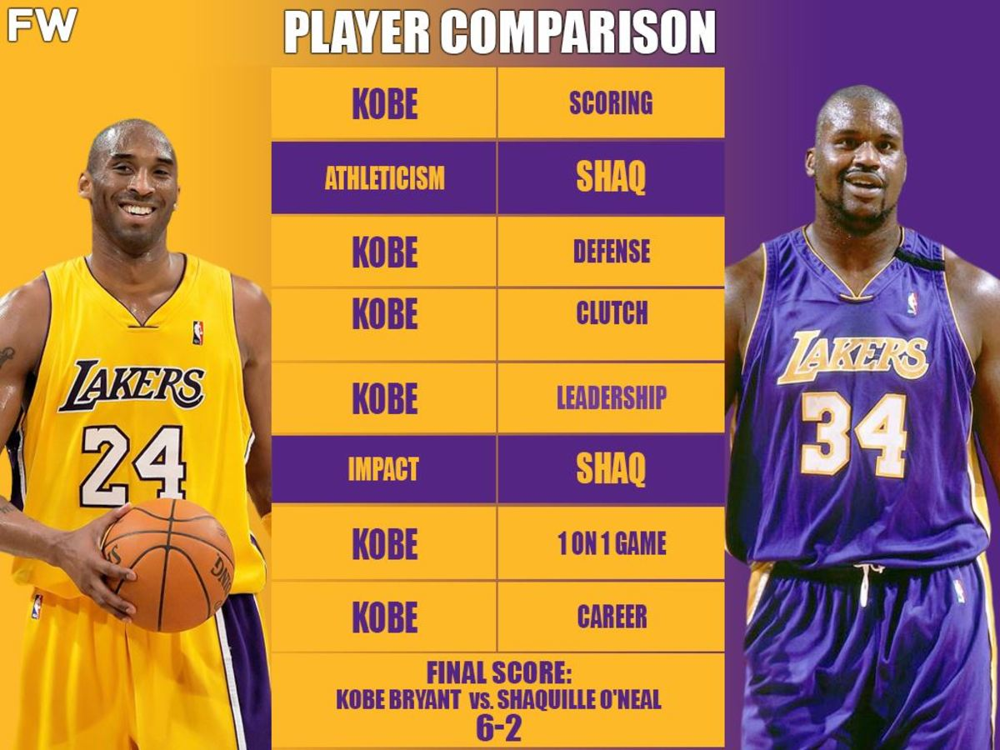
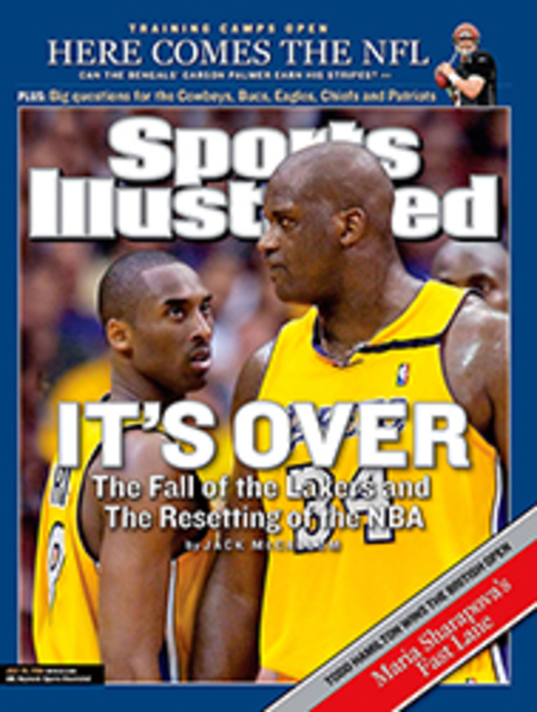
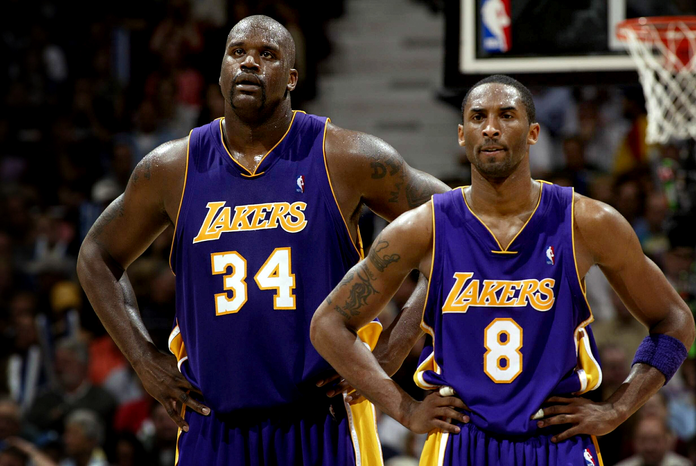
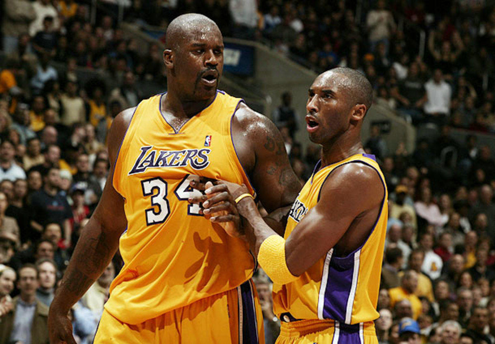